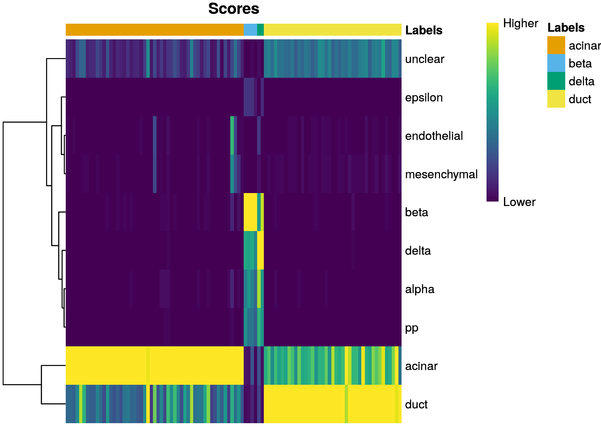
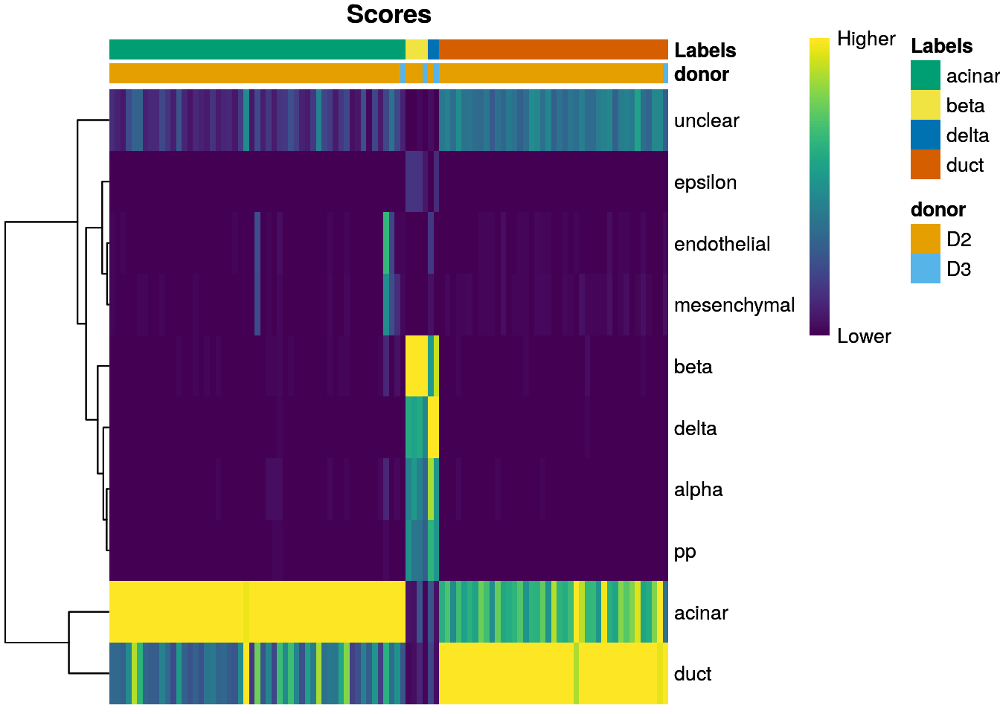
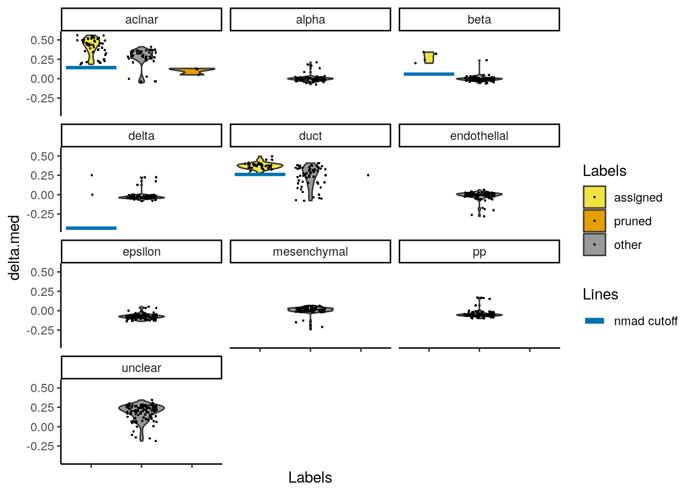
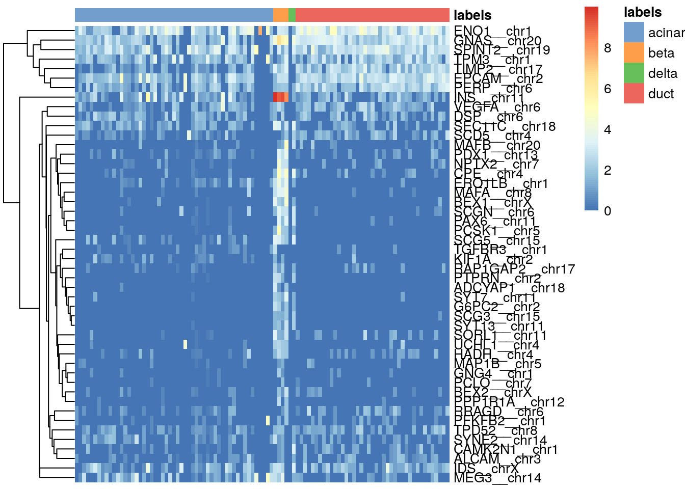

Chapter 4 Annotation diagnostics
4.1 Based on the scores within cells
SingleR provides a few basic yet powerful visualization tools. plotScoreHeatmap() displays the scores for all cells across all reference labels, which allows users to inspect the confidence of the predicted labels across the dataset. The actual assigned label for each cell is shown in the color bar at the top; note that this may not be the visually top-scoring label if fine-tuning is applied, as the only the pre-tuned scores are directly comparable across all labels.
library(SingleR)
plotScoreHeatmap(pred.grun)
For this plot, the key point is to examine the spread of scores within each cell. Ideally, each cell (i.e., column of the heatmap) should have one score that is obviously larger than the rest, indicating that it is unambiguously assigned to a single label. A spread of similar scores for a given cell indicates that the assignment is uncertain, though this may be acceptable if the uncertainty is distributed across similar cell types that cannot be easily resolved.
We can also display other metadata information for each cell by setting clusters= or annotation_col=. This is occasionally useful for examining potential batch effects, differences in cell type composition between conditions, relationship to clusters from an unsupervised analysis, etc. In the code below, we display which donor each cell comes from:
plotScoreHeatmap(pred.grun,
annotation_col=as.data.frame(colData(sceG)[,"donor",drop=FALSE]))
4.2 Based on the deltas across cells
The pruneScores() function will remove potentially poor-quality or ambiguous assignments. In particular, ambiguous assignments are identified based on the per-cell “delta”, i.e., the difference between the score for the assigned label and the median across all labels for each cell. Low deltas indicate that the assignment is uncertain, which is especially relevant if the cell’s true label does not exist in the reference. The exact threshold used for pruning is identified using an outlier-based approach that accounts for differences in the scale of the correlations in various contexts.
to.remove <- pruneScores(pred.grun)
summary(to.remove)## Mode FALSE TRUE
## logical 96 4By default, SingleR() will report pruned labels in the pruned.labels field where low-quality assignments are replaced with NA. However, the default pruning thresholds may not be appropriate for every dataset - see ?pruneScores for a more detailed discussion. We provide the plotScoreDistribution() to help in determining whether the thresholds are appropriate by using information across cells with the same label. This displays the per-label distribution of the deltas across cells, from which pruneScores() defines an appropriate threshold as 3 median absolute deviations (MADs) below the median.
plotScoreDistribution(pred.grun, show = "delta.med", ncol = 3, show.nmads = 3)
If some tuning parameters must be adjusted, we can simply call pruneScores() directly with adjusted parameters. Here, we set labels to NA if they are to be discarded, which is also how SingleR() marks such labels in pruned.labels.
new.pruned <- pred.grun$labels
new.pruned[pruneScores(pred.grun, nmads=5)] <- NA
table(new.pruned, useNA="always")## new.pruned
## acinar beta delta duct <NA>
## 53 4 2 41 04.3 Based on marker gene expression
Another simple yet effective diagnostic is to examine the expression of the marker genes for each label in the test dataset. We extract the identity of the markers from the metadata of the SingleR() results and use them in the plotHeatmap() function from scater, as shown below for beta cell markers. If a cell in the test dataset is confidently assigned to a particular label, we would expect it to have strong expression of that label’s markers. At the very least, it should exhibit upregulation of those markers relative to cells assigned to other labels.
all.markers <- metadata(pred.grun)$de.genes
sceG$labels <- pred.grun$labels
# Beta cell-related markers
library(scater)
plotHeatmap(sceG, order_columns_by="labels",
features=unique(unlist(all.markers$beta))) 
We can similarly perform this for all labels by wrapping this code in a loop, as shown below:
for (lab in unique(pred.grun$labels)) {
plotHeatmap(sceG, order_columns_by=list(I(pred.grun$labels)),
features=unique(unlist(all.markers[[lab]])))
}Heatmaps are particularly useful because they allow users to check that the genes are actually biologically meaningful to that cell type’s identity. For example, beta cells would be expected to express insulin, and the fact that they do so gives more confidence to the correctness of the assignment. By comparison, the scores and deltas are more abstract and difficult to interpret for diagnostic purposes. If the identified markers are not meaningful or not consistently upregulated, some skepticism towards the quality of the assignments is warranted.